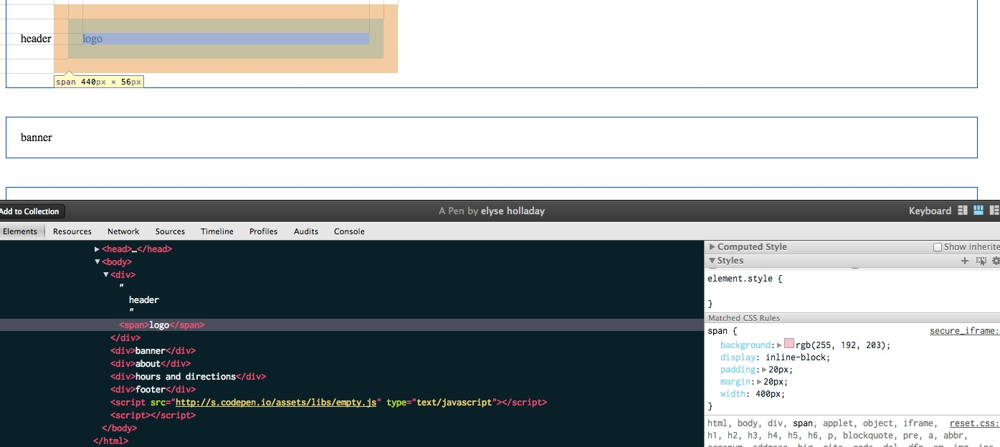

Mockups to Code
- Let's Draw Boxes~
- HTML Theory
- What is a div anyway?
- Display States
- The Box Model
- Margin Collapsing
- Box Sizing
- Name All the Things
- Basic Naming
- A Word about DRY
- Page Structure Markup
- Making it Pretty!
- float: left;
- What is a Float?
- Floating is Weird: Widths
- Floating Exercises
- No, it's Really Weird: Clearing
- The Clearfix
- Laying Out
- CSS In Use
- Classes & IDs
- Specificity
- Organizing & Commenting
- OOCSS, SMACSS, & DRY
- CSS File Organization
- A Brief Note about SASS
- Making it Pretty Part 2
- Stuff
- Modules: Wrappers & Navs
- Pictures
- CSS3
Boxes!
Web layouts are made of them.
HTML Theory
Divs, Display States, Box Model, Margins & Box Sizing
What is a Div, Anyway?
The building blocks of HTML layout are <div>s—generic containers that have no semantic meaning. You can think of a <div> as a rectangular box.
Compare to the semantically named <p> (paragraph), or <a> being an anchor link.
A <div> with nothing in it is an "invisible" box. A <div> with no CSS applied only has the dimensions of its content.
A Wild Div Appears
Let's take a look at some basic, vanilla <div>s.*
<div>
header
<span>logo</span>
<div>nav</div>
</div>
<div>banner</div>
<div>about</div>
<div>hours and directions</div>
<div>footer</div>
div {border: 1px solid blue;}
* and a sad, lonely span.
Display Style
<div>s (and other HTML elements) typically have three display states.
display: block;
display: inline;
display: inline-block;
display: block;
By default, a <div> is block level.
Block level elements begin on a new line on a page and occupy 100% of the available width (on the page or of its parent element).
A block level element will be as wide as it's available space and as tall as the content that is inside it.
That's what our divs are doing right now: they are taking up the full page width and the height of the content that is inside them.
display: inline;
An inline element can only have the height or width of what is inside it—you cannot apply height or width to them in CSS—, and displays "in the line" of text.
An inline element can wrap some text inside a paragraph like this without disrupting the flow of that paragraph.
<span>like this</span>
The <a> element is the most common inline element. <span> is the second most common, typically used for wrapping some content without adding a block-level element like a <div>.
display: inline-block;
DIY
The Box Model
What is the Box Model?
The box model is the specification that defines how a box and its attributes relate to each other.
It consists of four parts, in order: Margin, Border, Padding, Content.

border
The border surrounds the box.
margin
Margin is the space outside the <div>'s border; this space typically separates it from other <div>s.
padding
Padding is the space inside the <div>'s border; this space usually gives the text or images inside a <div> some room away from the border.
DIY
Let's add some margin and padding and see how they affect our <div>s and our <span>.
But Wait...
Anyone noticing some weird things about this?
- Why is the margin on the left and right the same as the margin between each of our
<div>s? Shouldn't it be bigger? - Why is our 400px wide span actually 440px wide??
- ...and how can I tell!?
A Brief Note on Dev Inspector!
Margin Collapsing
"In CSS, the adjoining margins of two or more boxes can combine to form a single margin. Margins that combine this way are said to collapse, and the resulting combined margin is called a collapsed margin."
Margin Math
Our stacked divs all have a bottom margin of 40px and a top margin of 40px.
When those two margins touch, instead of adding 40+40, it takes the larger of the two margins.
(In our case, they're the same, but if one was 10 and one was 20, it'd be 20.)
as one astute stackoverflow commenter put it,
"What is the point of CSS collapsing margins?"
& Box Sizing
"When you set the width of an element, the element can actually appear bigger than what you set: the element's border and padding will stretch out the element beyond the specified width. Look at the following example, where two elements with the same width value end up different sizes in the result."
Box Sizing Math:
margin-right + border-right + padding-right + width + padding-left + border-left + margin-left"Over the generations, people realized that math is not fun, so a new CSS property called box-sizing was created. When you set box-sizing: border-box; on an element,... the padding and border of that element no longer increase its width."
In plain English, this just means the padding is subtracted from the total width, rather than adding to it.
You can add it globally using the CSS * selector, so all your math becomes easier:
* {
-webkit-box-sizing: border-box;
-moz-box-sizing: border-box;
box-sizing: border-box;
}
DIY
Name All The Things!
Basic Naming, DRY, Page Structure Markup
Basic Naming
Now we have four stacked divs—great. We've written their purposes inside each one, but our code doesn't know the difference; they're all just <div>s.
We can reference our <span> separately, because it's the only <span> on the page, right? But how do we reference our <div>s individually?
Classes
Classes (and IDs) are just names we can apply to any HTML element. They don't have any styling information to them all by themselves. They provide us a way to reference an element by a name.
Name All The Things!
<div class="header">
header
<div class="logo">logo</div>
<div class="nav">nav</div>
</div>
<div class="banner">banner</div>
<div class="about">about</div>
<div class="hoursdirections">hours and directions</div>
<div class="footer">footer</div>
If you refresh you'll notice there's no difference in the styles--our <div> CSS still applies. But now we can do this:
3 Words About DRY:
Don't Repeat Yourself
div { margin: 20px; padding: 20px;}
This code applies to all the <div>s on the page, so we can just write it here, instead of doing this:
.header {border: 1px solid red; margin: 20px; padding: 20px;}
.banner {border: 1px solid black; margin: 20px; padding: 20px;}
.about {border: 1px solid purple; margin: 20px; padding: 20px;}
.hoursdirections {border: 1px solid green; margin: 20px; padding: 20px;}
.footer {border: 1px solid orange; margin: 20px; padding: 20px;}
Adding Content
Obviously there's a lot more in our mockup than a word or two. Let's go back to our mockup and do the box drawing exercise around all the rest—the paragraphs, titles, etc.
The Header
Our div.logo will have an image in it, but for now let's just write the name of our coffeeshop, Vintage Heart Coffee.
The navigation will be in the new HTML5 attribute <nav> and contain a set of links.
You're probably used to seeing navigations in a <ul> unordered list, but for accessibility, we're learning this might not be the best.
<div class="header">
<div class="logo">Vintage Heart Coffee</div>
<nav role="navigation">
<a href="#">hours & directions</a>
<a href="#">baristas</a>
<a href="#">press</a>
<a href="#">blog</a>
</nav>
</div>
The Banner
The banner here is a big image, but we're not ready to add images. Instead let's just add our content as text.
We have a tagline, and an address.
<div class="banner">
<div class="tagline">Love your coffee</div>
<div class="address">1405 East 7th Street, Austin</div>
</div>
About
We'll put each header in an <h4> tag, which tells us it's a header, but not as important as an h1, and then each paragraph into a <p> paragraph element.
<div class="about">
<h4>Slow Down.</h4>
<p>[text goes here]</p>
<h4>Third Space</h4>
<p>[text goes here]</p>
<h4>Local Coffee & Pastries</h4>
<p>[text goes here]</p>
<p>[text goes here]</p>
</div>
Hours & Directions
Here we have a map, which will be an image. To the left we have an address and the hours.
<div class="hoursdirections">
<div class="map">
[map goes here]
</div>
<div class="address">
1405 E. 7th. Austin, TX 78702
</div>
<div class="hours">
Open every day from 7am til 10 pm.
</div>
</div>
Footer
Lastly, we have the footer, which is basically a duplication of the header, but without the logo.
Note the #s in the link hrefs? Because those pages don't exist yet, we're just adding placeholder URLs. Like the images, we'll come back and fill these in later.
<div class="footer">
<nav role="navigation">
<a href="#">hours & directions</a>
<a href="#">baristas</a>
<a href="#">press</a>
<a href="#">blog</a>
</nav>
</div>
Making it Pretty!
Background, Margin, Colors, Fonts
Backgrounds
Let's add some background colors to each section instead of borders, so they're more visible and less ugly!
body {
background: #F7F5F2;
}
.header {
background: #F7F5F2;
}
.banner {
background: #4D717A;
}
.about { /* no background */ }
.hoursdirections {
background: #ffffff;
}
.footer {
background: #222222;
}
Margins
If we remove the margin from the <div> element in our CSS we'll see that things stack closer together, which is what we want. But they don't touch the edge. Why?
The browser automatically applies a margin (of 8px) to the body. Most of the time you'll apply margin: 0; to the body to override it and get full-width backgrounds.
body {
margin: 0;
}
Font Colors
body {
color: #222;
}
.logo {
color: #555;
}
.banner {
color: #fff;
}
.about h4 {
color: #a18c9c;
}
.hoursdirections {
color: #694160;
}
Link Colors
a, a:active, a:visited {
color: #4d717a;
text-decoration: none;
}
a:hover, a:focus {
color: #9cb89a;
text-decoration: none;
}
Fonts
Let's add some fonts—we'll use a Google Web Font and a regular websafe font fallback.
First we'll add the Google Web Font link into the head of our HTML page.
<link href='http://fonts.googleapis.com/css?family=Noto+Sans:700|Noto+Serif:400,700' rel='stylesheet' type='text/css'>
Then we'll add the font-family declaration in our CSS, along with some other font styles.
body {
font-size: 100%;
line-height: 1.5em;
font-family: "Noto Serif", Georgia, serif;
}
h1, h2, h2, h4, h5, nav {
font-family: "Raleway", Helvetica, Arial, sans-serif;
text-transform: uppercase;
}
We're Getting There!
float: left;
Layout Time!
What is a Float?
Floating was originally intended to "float" images around text1.
“The practice of flowing text around an image goes back a long, long time. That’s why the ability was added to the Web starting with Netscape 1.1, and why CSS makes it possible using the property float."
"The purpose of the CSS float property is to push a block-level element to the left or right, ...allow[ing] naturally-flowing content to wrap around the floated element. This concept is similar to what you see every day in print literature."
— Smashing Magazine Float Theory
Eric Meyer, July 17, 2004
"Floats have been bent to the purpose of large-scale layout for exactly one reason: clear. Because you can clear a footer below two floated columns, float layout came into being. If there had ever been a way to “clear” elements below positioned elements, we’d never have bothered to use floats for layout. We’d have used floats in layouts, but that’s not the same thing."
We Abuse Floats for Layout
"Take the common page layout with a section and an aside. The section and aside, as block level elements, will be stacked on top of one another by default. However, we want them to sit side by side."

Try it Yourself!
OK, so, float: left;?
"Important Things to Note"
"...when floating an element it is going to float all the way to the edge of its parent container. If there isn’t a parent element it will float all the way to the edge of the page."
Secondly, because floated elements "are taken out of the flow", the other block elements around them act as if they aren't there.
Elements after it ignore the floated elements and appear where they normally would if the float element wasn't there.
Block Elements = Full Width
Third, if you'll remember back to our display slides, a block element takes up all it's available width. A floated element that does not have a pre-defined width will take up only as much horizontal space as its content.
This is why we are seeing the behavior we just saw: our .sidebar is now all the way to the left of the page, the .main element is acting like the .sidebar isn't there, and the .sidebar is only as wide as its content (the word "sidebar").
Floats with Widths
So we just add a width to .sidebar, right?
Moar Widths
Because .main is still a block element, it will still take up 100% of the width of the page. So even though we set a width on .sidebar, .main isn't next to it because it's 100% wide.
Give .main a width
This makes .main small enough to be next to .sidebar, but block elements start at the beginning of a new line, and ignore floated elements, so .main is still starting at the edge of the page instead of beside .sidebar.
float .main
If we float .main without giving it a width, it does exactly what .sidebar did: take up only the width of its content, the word "main".
Now .main floating correctly beside .sidebar, but it's skinny, and now the .footer is all up in our business.
float .main AND give it width
OK.. better! But why is .footer still all up in my business?
Floats are Weird: Clearing
Because floated elements are "taken out of the flow", the other block elements around them act as if they aren't there. Elements after it ignore the floated elements and appear where they normally would if the float element wasn't there.
So .footer is appearing where it should, right after our last non-floated element (.header), and ignoring the two floated elements in between it.
clear: both/left/right/none;
What we want .footer to do is respect that there's two elements above it, even though they are floated.
The clear property will force a <div> to fall below the two floated elements.
Clear has four values: both/left/right/none.
clear: left will only clear left-floated elements.clear: right will only clear right-floated elements, and clear: both will clear anything.
Clear the .footer
Add clear: both;, since we want to clear both .main and .sidebar
Clearing Part 2: The Clearfix
Let's float .tagline to the right, so we can have the logo and tagline appearing side by side.
Why is .tagline now appearing half in and half out of .header? and why is it pushing .main down?
Floats Aren't Content
Floated elements don't count as content of their parent <div>, so they don't count as height.
The parent element (.header) will be the height of whatever content is inside it, so .tagline doesn't count for the height of .header.
So what we need to do to fix both of these problems is make .header recognize .tagline as being inside it, and make .sidebar and .main start on the same line.
Any Ideas?
Let's see what putting a clear on .sidebar gets us.
This makes .sidebar and .main start on the same line, because we are making .sidebar clear any floats that are above it. But it didn't fix our containment problem.
float the parent
A floated element will expand to contain any floated elements that descend from it.
If we float .header left, it suddenly will include .tagline in its content. However, it is now only as wide as its content, which is the word "header" + the .tagline box.
Additionally, if we remove the clear: both; on .sidebar, .sidebar will now float up next to .header. So this fix can work in some cases, but not in all.
The Clearfix
What we REALLY want is to clear after the .tagline but before the close of .header.
If we clear .sidebar, we are clearing after .header. But there's no <div> after .tagline to put clear: both; on.
So we're going to rely on some CSS magic:
.header:after {
content: "";
visibility: hidden;
display: block;
height: 0;
clear: both;
}
:after
:after is a CSS pseudo-selector that means "after the element".
Since :after isn't really a DOM element, we have to put some content in it, so we define content: "";, which makes the browser believe there's some content in this fake :after thing.
Then we make it a block level element, but hide it with visibility: hidden; and set it to height: 0; so that it never actually appears, and then we apply clear: both; to it.
Laying Out
Floats for layout, columns
The Header
Here we want our logo floated to the left, and our navigation to the right and for the header to appropriately contain both floated elements.
Our nav text items are already styled. We want header to have a bottom border, and a background color.
Later we'll add the image logo.
<div class="header">
<div class="logo">Vintage Heart Coffee</div>
<nav role="navigation">
<a href="#">hours & directions</a>
<a href="#">baristas</a>
<a href="#">press</a>
<a href="#">blog</a>
</nav>
</div>
.header {
padding: .75em 0 .5em;
background: #F7F5F2;
border-bottom: 5px solid #a8988b;
}
.header:after {
content: "";
height: 0;
display: block;
visibility: hidden;
clear: both;
}
.logo {
color: #555;
float: left;
}
nav {
float: right;
border: 1px solid red;
}
The Banner
We'll get to images at the end, so for now let's just add plenty of padding to make this as big as we want it and give it a bottom border.
Give your tagline and address their font sizes.
<div class="banner">
<div class="tagline">Love your coffee</div>
<div class="address">1405 East 7th Street, Austin</div>
</div>
.banner {
background: #4d717a;
color: #fff;
border-bottom: 1px solid #a8988b;
padding: 120px 50px;
}
.tagline {
font-size: 100px;
}
.address {
font-size: 30px;
}
About
Our about section is actually two columns, so knowing what we know about floats, we could just give each h4 and p a width and they'd get all columned up, right?
New CSS like flexbox may allow for that, but for now let's just use some good old-fashioned divs, one for each column.
<div class="about">
<div class="introtext">
<h4>Slow Down.</h4>
<p>[text goes here]</p>
<h4>Third Space</h4>
<p>[text goes here]</p>
</div>
<div class="introtext">
<h4>Local Coffee & Pastries</h4>
<p>[text goes here]</p>
<p>[text goes here]</p>
</div>
</div>
About
Note that you shouldn't name your <div>s .leftcolumn and .rightcolumn--what if you switched them?
I picked .introtext, which says something about the content it contains. Semantic names can be a little difficult to choose, but try to explain what's it is or does, not what it looks like.
Now let's give each of those .introtexts a width and a float. And since we're floating them, be sure to give .about a clearfix, too!
.about {
background: #ffffff;
}
.about:after {
content: "";
height: 0;
display: block;
visibility: hidden;
clear: both;
}
.about h4 {
color: #a18c9c;
}
.introtext {
float: left;
width: 50%;
}
.about p {
color: #222f42;
}
Why didn't our .introtexts float?
Debugging
But seriously: the best tool to debug CSS is the Dev Inspector and a trusty border: 1px solid red;. Try it out.
Anyone remember the box-sizing from earlier? Because all of our <div>s have padding on them, 50% (of the page) + 20px of padding actually equals MORE than 50% of the page.
Let's remove that padding: 20px;, since we may not want EVERY <div> to have it, and let's add that box-sizing property back in.
* {
-webkit-box-sizing: border-box;
-moz-box-sizing: border-box;
box-sizing: border-box;
}
/*div {
padding: 20px;
}*/
Hours & Directions
Let's make sure the address and hours float correctly to the left.
The map we can give an approximate size in the CSS and float it right. Since it's first, we can just float the others left without having to clear anything.
<div class="hoursdirections">
<div class="map">
map goes here
</div>
<div class="address">
1405 E. 7th. Austin, TX 78702
</div>
<div class="hours">
Open every day from 7am til 10 pm.
</div>
</div>
.hoursdirections {
background: #ffffff;
color: #694160;
}
.hoursdirections:after {
content: "";
height: 0;
display: block;
visibility: hidden;
clear: both;
}
.hoursdirections .address {
color: #694160;
text-transform: uppercase;
font-size: 2em;
margin: 3em 0 .5em;
float: left;
width: 45%;
}
.hoursdirections .hours {
float: left;
clear: left;
width: 45%;
color: #798a77;
font-size: 1.25em;
}
.hoursdirections .map {
float: right;
background: black;
width: 45%;
height: 220px;
}
Footer
Not much to do here—the background color is already added. Let's give it some more padding (spacing) so it's more readable.
We don't want our nav to float to the right, so let's override the float: right; just for the .footer.
Nav links will be different than the header, but we'll get to that after our CSS section.
<div class="footer">
<nav role="navigation">
<a href="#">hours & directions</a>
<a href="#">baristas</a>
<a href="#">press</a>
<a href="#">blog</a>
</nav>
</div>
.footer {
background: #222;
padding: 60px;
}
.footer nav {
float: none;
}
CSS In Use
Classes & IDs, Specificity, Organization, & Tools
Classes & IDs
Adding a class name or ID to an element does nothing to that element by default. Remember, it's just a name.
IDs are unique.
Each element can have only one ID, and each page can have only one element with that ID.
Classes are reusable.
You can use the same class on multiple elements, and you can use multiple classes on the same element.
Any styling information that needs to be applied to multiple objects on a page should be done with a class.
<div class="widget"></div>
<div class="widget"></div>
<div class="widget"></div>
You can now use the class name .widget as your hook to apply the same set of styling to all of these.
Combinations
There is nothing stopping you from having both an ID and a class on a single element.
<div id="widget-12345" class="widget">[widget text]<div>
.widget is a class for styling all widgets, and #widget-12345 is a unique ID that we can use to reference that particular widget in JavaScript, or to link directly to it as a unique URL.
Multiples
What if you need one .widget to be bigger than the rest, but still share all the other attributes?
<div class="widget"></div>
<div class="widget big"></div>
<div class="widget"></div>
.widget {
background: blue;
padding: 20px;
color: white;
}
.big {
background: red;
}
Chaining
What is the difference between these two selectors?
.widget.big { }
.widget .big { }
A Single Space
They look nearly identical, but the top one has no space between .widget and .big while the bottom one does. This small difference makes a huge difference in what it does. To some of you, that top selector may seem like a mistake, but it's actually a quite useful selector.
In English...
.widget.big { }
Select the element which has a class name of .widget and ALSO a class name of .big.
.widget .big { }
Select all elements with the class name .big that are descendents of the element .widget.
Don't Be Redundant
<a href="http://css-tricks.com" class="link">CSS-Tricks.com</a>
We already know this element is a link—it's built-in to the element.
If you want to style it like a link, you can use the element <a>. If you are making a more complex site and need to distinguish between types of links, choose a better classname. For example: .search_link and .profile_link.
Be Semantic
"When choosing a class or ID it is important to choose something that has value to the actual context of that element."
"For example, if you have a div with an orange background that contains social media links your first inclination might be to give the div a class of .orange. What happens if that orange background is later changed to blue? Having a class of .orange. no longer makes sense. A better, more semantic, choice for a class would be .social. as it pertains to the contents of the div, not the style."
"Class names should never map directly to a CSS property, or a given visual effect you want to achieve (such as floating, or a border effect, or a background colour, etc.). It’s shockingly bad as an ideology because it encourages a direct mapping between class name and display action. A class name, like an ID, should be descriptive in a semantic sense. ie., it should describe something about the content of the tag to which it applies. “float” is not describing content. It is describing an action you want to perform."
Why Not to Use IDs
There can only be one element with an ID per page, so that element is not re-usable on that page.
There are also very few cases where ID-based styles will never be reused. Let's say you have a #search box in your header. Then later you decide to add it to the footer, too.
What is confusing is that your CSS will still apply. However, if you're using JavaScript on that #search, it will now break, because the JavaScript doesn't know which one.
It's almost always better to use "several reusable snippets of CSS" with classes instead of IDs to prevent this potential issue. A good rule of thumb for me is that unless it's truly unique, like our .widget-12345 example, use a class.
Specificity
What is Specificity?
The "C" in CSS stands for "cascading." We typically take that to mean a style rule later in the stylesheet will override a previous one.
CSS is more complicated, though. It assigns each selector a "weight" based on how specific it is. The more specific your selector, the more precedence it will have.
Browsers Read Backwards
Browsers read right to left. The right-most selector is the "key selector".
#home a { }
"We’d generally read this selector as "find the element with #home", then apply these styles to every a it contains". This should be super-fast, right? After all there should only be one #home on the page. However, browsers read this differently: "find every a element, then check if its parent element is #home, and if not keep checking parent elements until you find it or reach <html>". That’s a lot less performant than our mental model."
— oli.jp on IDs
Weight
- Give each HTML element selector 1 point. Example: p
- Give each class selector 10 points. Example: .column
- Give each id selector 100 point. Example: #wrap
- Add up the points for each piece of the selector to get the full value of the selector.
The Reference Docs
CSS-Tricks: The Specifics on CSS Specificity
Smashing Magazine: CSS Specificity & Inheritance
Smashing Magazine: CSS Specificity Things you Should Know
"Using an ID over a class also ratchets up the specificity all the way to Darth Sidious in Andy Clarke’s Star Wars-themed guide to CSS specificity. While you might not think this is a big deal, it quickly leads to a full-on selector battle. This problem becomes worse as the CSS gets larger, and more people get involved, leading to crazy-specific selectors like .entry #content_main div.post a {…}. This rule could probably be rewritten at least as .entry .post a {…}, or maybe .post a {…}, but changing it to .post-link {…} would be even better. My rule of thumb is three CSS selectors max — any more than this and it’s generally a sign of (specificity) problems."
Organizing & Commenting
Commenting Rules of Thumb
- Comment every big section of CSS/HTML
- Comment any individual items that may need clarification
- Be consistent
There are loads of CSS style guides and organizational references. Here's a few I like: KSS (GitHub), Idiomatic CSS, CSSWizardry, and more.
SMACSS

SMACSS stands for Scalable Modular Architecture for CSS, a book written by Jonathan Snook.
Categorize your CSS Rules
"At the very core of SMACSS is categorization. By categorizing CSS rules, we begin to see patterns and can define better practices around each of these patterns."
- Base — These are your defaults (html, body, h1, ul, etc)
- Layout — These divide the page into major sections
- Module — These are the reusable modular components of a design
- State — These describe how things look when in a particular state (hidden or expanded, active/inactive)
- Theme — These define things like a color scheme or typographic treatment across a site
OOCSS
OOCSS, or Object Oriented CSS, created by Nicole Sullivan, breaks CSS out into reusable modules.
It has two main principles: separate structure from skin, and separate container from content.
A Quick Example
.button {
width: 200px;
height: 50px;
}
.widget {
width: 500px;
height: auto;
float: left;
}
.skin {
border: solid 1px #000;
background: #ccc;
color: #fff
}
<div class="button skin">[content of a button]<div>
<div class="widget skin">[content of a widget]<div>
DRY: Don't Repeat Yourself
The main principles of DRY are: group reusable css properties together, and name these groups logically.
File Organization
- put CSS files in a
/cssor/stylesheetsfolder - amount of CSS is a good determining factor for breaking into files
- divide your CSS into files based on type. (think SMACSS)
A Brief Note about SASS

SASS is a tool that makes organizing your CSS (and files) much easier. You can create variables and mixins that "include" repeatable bits of code. These are easier to edit (in one place), maintain (all code cascades from them), and organize.
Variables
$white: #ffffff
$grey: #cccccc
$lightpurple: #a18c9c
$darkpurple: #694160
a, a:active, a:visited {
color: $lightpurple
}
a:hover, a:focus {
color: $darkpurple
}
Mixins
// rounded corners - all corners the same
@mixin border-radius-all($cornervalue)
border-radius: $cornervalue
// rounded corners - different corners
@mixin border-radius-mixed($topleft, $topright, $bottomright, $bottomleft)
border-radius: $topleft $topright $bottomright $bottomleft
.box {
@include border-radius-mixed(0, 2px, 0, 2px)
}
.button {
@include border-radius-all(2px)
}
Importing
"Stylesheets can get pretty big. CSS has an @import directive that allows you to break your styles up into multiple stylesheets, but each stylesheet takes a separate (slow) HTTP request. That’s why Sass’s @import directive pulls in the stylesheets directly. Not only that, but any variables or mixins defined in @imported files are available to the files that import them."
Import Example
/* _rounded.sass */
@mixin rounded($vert, $horz, $radius: 10px) {
border-#{$vert}-#{$horz}-radius: $radius;
-moz-border-radius-#{$vert}#{$horz}: $radius;
-we bkit-border-#{$vert}-#{$horz}-radius: $radius;
}
/* style.sass */
@import "rounded";
#navbar li { @include rounded(top, left); }
#footer { @include rounded(top, left, 5px); }
#sidebar { @include rounded(top, left, 8px); }
Nesting
My favorite SASS feature is nesting. This can get really hairy if you do it too much, but used sparingly it's very cool.
.about {
margin: 4em 0;
}
.about .introtext {
float: left;
width: 50%;
padding: 0 4.5em 0 0;
}
.about {
margin: 4em 0;
.introtext {
float: left;
width: 50%;
padding: 0 4.5em 0 0;
}
}
Making it Pretty Part 2
Wrapping
So the last layout work we have to do is the width. You can see in the mock that every section has a full background color, but the content isn't full. Now it's possible to do this with some really horrible CSS, like adding left and right padding to every single div...
But obviously that is not a good idea. It's not maintainable, it's not precise, and it's definitely not reusable.
div.wrapper
Instead, let's create a .wrapper div that wraps the content inside each section. The section itself will be full width, but the wrapper inside it will constrain only the content. This ensures that each section will always be the same width, and that we'll never miss one.
<div class="banner">
<div class="wrapper">
<div class="tagline">Love your coffee</div>
<div class="address">1405 East 7th Street, Austin</div>
</div>
</div>
.wrapper {
width: 80%;
margin: 0 auto;
/*border: 1px solid red;*/
}
Nav CSS
In our page, our header and footer navs are the same, but the header one is floated left, and the bottom one is not (among other differences.)
The cleanest way to write this is to have a "module" for nav, and then overwrite what is necessary in each section.
nav {
font-family: "Noto Sans", Helvetica, Arial, sans-serif;
text-transform: uppercase;
/* inherit link color */
}
nav a {
padding-right: 1.5em;
}
/* style nav individually in modules */
.header nav {
float: right;
width: 75%;
margin-top: 1.8em;
text-align: right;
}
.footer nav a,
.footer nav a:active,
.footer nav a:visited {
color: #9cb89a;
}
.footer nav a:hover,
.footer nav a:focus {
color: #F7F5F2;
}
Fixed Header
Our header in the final version is "fixed", so it doesn't scroll along with the rest of the page.
.header {
position: fixed;
top: 0;
width: 100%;
height: 120px;
padding: .75em 0 .5em;
background: #F7F5F2;
border-bottom: 5px solid #a8988b;
}
body {
margin: 100px 0 0 0;
}
Pictures
The Logo
The logo uses ye olde "text-indent" trick. This is cool because it allows for the text to still be in the HTML, but not to display on screen.
Banner Background
The banner is a simple background image, but with one special trick:
background-size: cover;
This means "cover the entire area".
And as we saw with the logo, a background image requires a height. Here the background-size stands in for the width. I set a min-height here, rather than a fixed height, but either would work.
Tagline
Tagline uses the same text-indent trick as the logo, and again, has a height and a width.
Address
This isn't an image, but I did add some margin and padding to correctly align it where I wanted.
The negative margin value will move an element UP. Use sparingly, as layouts with this can get tricky! Pro tip: use a border to see where these elements overlap!
Footer Background
A fun trick for visual effect is adding a texture background on top of a color. The texture image is transparent (and sometimes tileable), so it will be a much smaller file than one with the bg color and texture in it. This reduces your image payload to the server!
Hours & Directions Background
Like the footer, we're using a background pattern here. Unlike the footer, this one is a repeatable image, so we don't set a location or "no-repeat".
I got this from my favorite tileable pattern library, Subtle Patterns.
Map
The map image is, unlike the others, an actual image in the HTML. It could easily be a background image, but I wanted it to overlap the footer, and a background won't do that. Can anyone guess why?
Hint 1: Our map div is floated.
Hint 2: A div with a background has to have a height and a width for the background image to fully appear.
Hint 3: The content of a float doesn't count as height.
Map
Because the image is in the HTML, it will always display full size, unless we give it some CSS to change that, cut it off, etc. Since our div is floated, and the content (a full size image) doesn't count as height, if we set a smaller height to the div (220px), the footer will appear right after that... but the rest of the image will still show.
This wouldn't work if the map was a background image, because to get it to fully appear, we'd have to set the height to the full height of the map image.
CSS3 and SASS
Header Box Shadow
.header {
border-bottom: 5px solid #a8988b;
-webkit-box-shadow: 0 1px 3px rgba(0, 0, 0, 0.2);
-moz-box-shadow: 0 1px 3px rgba(0,0,0,0.2);
box-shadow: 0 1px 3px rgba(0, 0, 0, 0.2);
}
Link Transitions
a, a:active, a:visited {
color: #4d717a;
text-decoration: none;
transition: color 0.5s ease;
-webkit-transition: color 0.5s ease;
}
RGBa
RGBa is a way to set colors (similar to a hex value) that allows for an alphatransparency value.
Opacity opacity: .5 sets everything in the entire div to be that transparency value, which we may not want. If we just want the background color to be transparent, but not the text, opacity won't work. Enter RGBa.
.about h4 {
border-bottom: 2px solid rgba(161, 140, 156, .25);
}
SASS
Your last downloaded zip contains two different versions, style.scss and style.sass. These are two syntax formats that SASS allows for.
.scss looks like CSS, including punctuation, and accepts regular CSS.
.sass has no punctuation, and nesting is dependent on indentation.